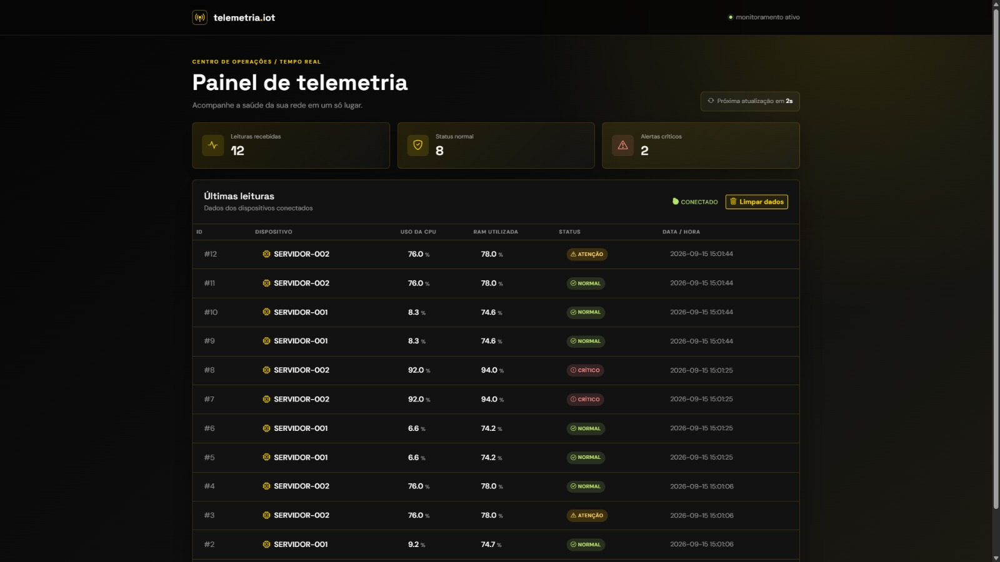

Sistema de monitoramento de servidores e infraestrutura

Este projeto simula um sistema de telemetria para monitoramento de servidores, coletando dados de utilização da CPU e da memória RAM, classificando o estado da infraestrutura e apresentando tudo em um dashboard visual para facilitar a análise da saúde do ambiente.